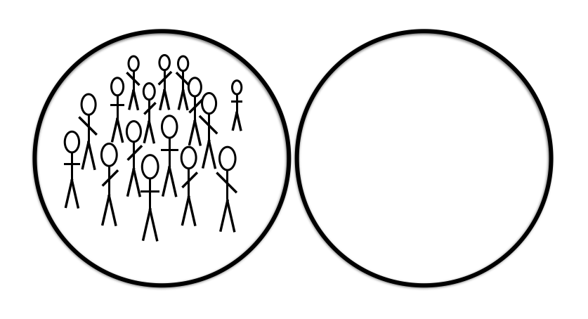
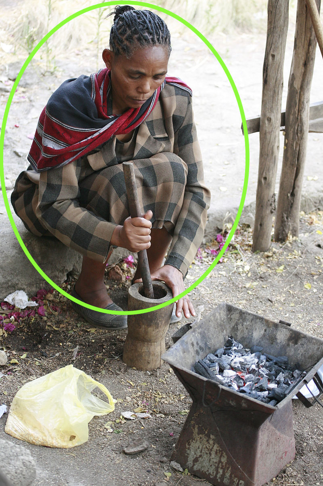

γραφὴ ζῶσα
Living Language in the Written Text
Lesson 2

Copyright 2017 by Jonathan Robie (@bibhumanities) and Micheal Palmer (@grklinguist).
This work is licensed under a Creative Commons Attribution-ShareAlike 4.0 International License.
Language
Γλῶσσα Ἑλληνικκή
Language objectives
- Pronouns ἐγώ, σύ, αὐτός, αὐτή
- πρός με, πρός σε, πρός αὐτον, πρός αὐτήν
Pronouns
- ἐγὼ εἰμί
- σὺ εἶ
- αὐτός ἐστιν
- αὐτή ἐστιν
ἐγὼ εἰμί
σὺ εἶ
αὐτός ἐστιν

αὐτή ἐστιν

- ἐγὼ εἰμὶ ᾿Ιωνάθαν.
- καὶ σύ, τίς εἶ;
- καὶ αὐτός, τίς ἐστιν;
- καὶ αὐτή, τίς ἐστιν;
πρὸς τίνα
| τίς; | πρὸς τίνα; |
|---|---|
| ὁ θεός | πρὸς τὸν θεόν |
| ὁ λόγος | πρὸς τὸν λόγον |
πρὸς τὸν θεόν
ὁ θεός
πρὸς τὸν λόγον
ὁ λόγος
ὁ θεός
πρὸς τὸν θεόν
ὁ λόγος
πρὸς τὸν λόγον
πρὸς τίνα
| ἐγώ | πρός με |
| σύ | πρός σε |
| αὐτός | πρὸς αὐτόν |
| αὐτή | πρὸς αὐτήν |
πρὸς με
ἐγώ
πρὸς σε
σύ
πρὸς αὐτόν
αὐτός
πρὸς αὐτήν
αὐτή
ἐγώ
πρὸς με
σύ
πρὸς σε
αὐτός
πρὸς αὐτόν
αὐτή
πρὸς αὐτήν
ἐγώ
πρὸς με
σύ
πρὸς σε
αὐτός
πρὸς αὐτόν
αὐτή
πρὸς αὐτήν
ἐγώ
πρὸς με
σύ
πρὸς σε
αὐτός
πρὸς αὐτόν
αὐτή
πρὸς αὐτήν
ὁ θεός
πρὸς τὸν θεόν
ὁ λόγος
πρὸς τὸν λόγον
👨 αὐτός, 👩 αὐτή
τίς ἐστιν;
👨 αὐτ__ Παῦλος ἐι.
👩 αὐτ__ Κυνθία ἐι.
👩 αὐτ__ Μάρθα ἐι.
👨 αὐτ__ Ἰώαννης ἐι.
👨 εἰς αὐτόν,
👩 εἰς αὐτήν
👨 αὐτ__ πιστεύει
εἰς αὐτ__ 👨
👩 αὐτ__ πιστεύει
εἰς αὐτ__ 👨

👩 αὐτ__ πιστεύει
εἰς αὐτ__ 👩

John 1:3-4
Κατά Ιωάννην 1:3-4
πάντα δι’ αὐτοῦ ἐγένετο,
καὶ χωρὶς αὐτοῦ ἐγένετο οὐδὲ ἕν.
ὃ γέγονεν ἐν αὐτῷ ζωὴ ἦν,
καὶ ἡ ζωὴ ἦν τὸ φῶς τῶν ἀνθρώπων·
πάντα δι’ αὐτοῦ ἐγένετο
πάντα
πάντα ἢ οὐδὲ ἕν;
ἕν ἢ οὐδὲ ἕν;
1 ἢ οὐδὲ 1;
ἐ ... ἑ
οὐδὲ ἕν
ἐν ἀρχῇ
πάντα δι’ αὐτοῦ ἐγένετο,
ἐγένετο
ἐγένετο ὁ δασύπους

πάντα δι’ αὐτοῦ ἐγένετο,
δι’ αὐτοῦ
ἐγένετο δι’ αὐτοῦ
ἐγένετο δι’ αὐτοῦ
δι’ = διά
διὰ τίνος;
👫
ἐγένετο δι’ αὐτοῦ
ἐγένετο διὰ τίνος;
ἐγένετο δι’ αὐτοῦ.
ἐγένετο διὰ τοῦ λόγου.
τίς;
👫
πάντα δι’ αὐτοῦ ἐγένετο
τίς ἐγένετο
διὰ τοῦ λόγου;
πάντα ἐγένετο
διὰ τοῦ λόγου.
πάντα δι’ αὐτοῦ ἐγένετο,
καὶ χωρὶς αὐτοῦ ἐγένετο οὐδὲ ἕν.
καὶ χωρὶς αὐτοῦ
ἐγένετο οὐδὲ ἕν
χωρίς
χωρίς
μετά
χωρίς
|
μετά
|
χωρίς |
μετά |
χωρίς
|
μετά |
καὶ χωρὶς αὐτοῦ
ἐγένετο οὐδὲ ἕν
χωρὶς αὐτοῦ
χωρὶς αὐτοῦ |
μετ’ αὐτοῦ
|
πάντα δι’ αὐτοῦ ἐγένετο,
καὶ χωρὶς αὐτοῦ ἐγένετο οὐδὲ ἕν.
ὃ γέγονεν ἐν αὐτῷ ζωὴ ἦν,
ὃ γέγονεν ἐν αὐτῷ ζωὴ ἦν,
ὃ γέγονεν
ἐγένετο ὁ δασύπους
ἐγένετο ... ὃ γέγονεν
ὃ γέγονεν ἐν αὐτῷ ζωὴ ἦν,
ἐν αὐτῷ
ἐγένετο ἐν αὐτῷ = ἐγένετο δι’ αὐτοῦ
ἐν τίνι;
👫
ὃ γέγονεν ἐν αὐτῷ ζωὴ ἦν,
ὃ γέγονεν ἐν τίνι;
ὃ γέγονεν ἐν αὐτῷ
ὃ γέγονεν ἐν τῷ λόγῳ
ὃ γέγονεν ἐν αὐτῷ ζωὴ ἦν,
ἡ ζωή
χωρὶς ζωῆς
|
μετὰ ζωῆς |
χωρὶς ζωῆς
|
μετὰ ζωῆς |
τίς; τί;
| τίς | τί |
|---|---|
 |
 |
τίς;
τί;
τίς;

τί;

ὃ γέγονεν ἐν αὐτῷ ζωὴ ἦν
τί ἦν ὃ γέγονεν ἐν αὐτῷ;
ζωὴ ἦν ὃ γέγονεν ἐν αὐτῷ.
πάντα δι’ αὐτοῦ ἐγένετο,
καὶ χωρὶς αὐτοῦ ἐγένετο οὐδὲ ἕν.
ὃ γέγονεν ἐν αὐτῷ ζωὴ ἦν,
καὶ ἡ ζωὴ ἦν τὸ φῶς τῶν ἀνθρώπων·
καὶ ἡ ζωὴ ἦν τὸ φῶς τῶν ἀνθρώπων
τὸ φῶς
τὸ φῶς

τὸ φῶς

τί;
καὶ ἡ ζωὴ ἦν τὸ φῶς τῶν ἀνθρώπων
τί ἦν ἡ ζωή;
τὸ φῶς τῶν ἀνθρώπων ἦν ἡ ζωή.
κατέλαβες;

Ἐν ἀρχῇ ἦν ὁ λόγος,
καὶ ὁ λόγος ἦν πρὸς τὸν θεόν,
καὶ θεὸς ἦν ὁ λόγος.
οὗτος ἦν ἐν ἀρχῇ πρὸς τὸν θεόν.
πάντα δι’ αὐτοῦ ἐγένετο,
καὶ χωρὶς αὐτοῦ ἐγένετο οὐδὲ ἕν.
ὃ γέγονεν ἐν αὐτῷ ζωὴ ἦν,
καὶ ἡ ζωὴ ἦν τὸ φῶς τῶν ἀνθρώπων·
ἐγώ εἰμι

σύ εἶ
αὐτός ἐστιν
αὐτή ἐστιν